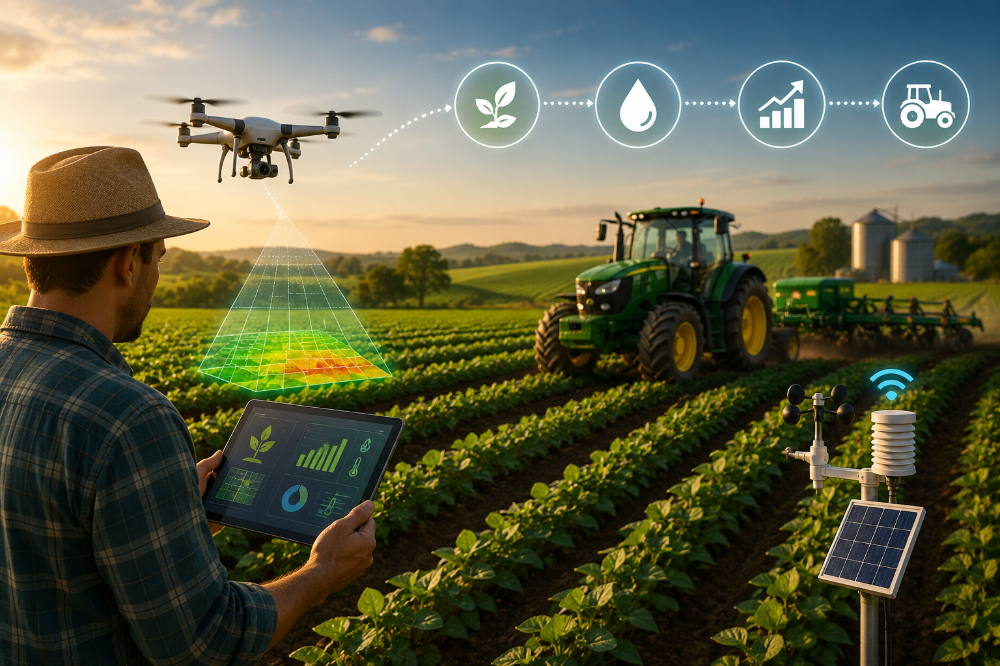

A tecnologia tem se tornado uma grande aliada dos produtores rurais, facilitando diversas atividades do dia a dia.
Com o avanço das máquinas, tornou-se possível acompanhar as plantações com mais precisão, economizar recursos e aumentar a produtividade.
Além disso, essas inovações ajudam a tornar o trabalho no campo mais prático e eficiente.
